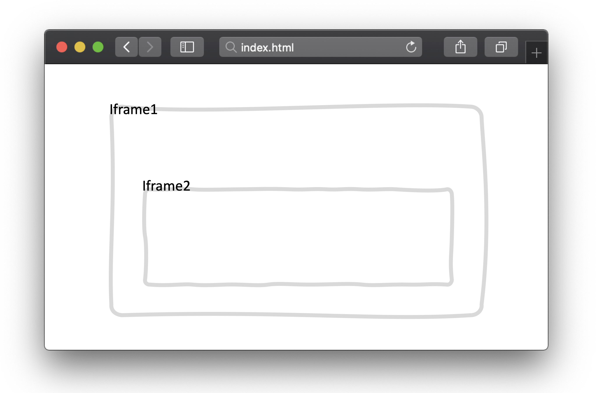
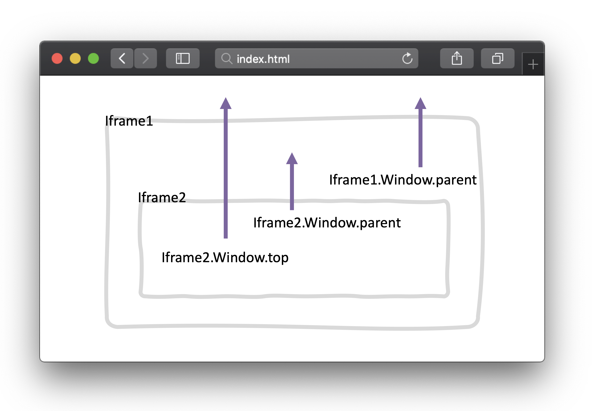

iframe 用于在页面内显示页面，使用 <iframe> 会创建包含另外一个文档的内联框架（即行内框架）
<iframe src="URL"></iframe>
定义 iframe 的宽度
定义 iframe 的高度
规定 iframe 的名称
规定是否显示边框，值为 0（不显示）和 1（显示）
规定是否在 iframe 中显示滚动条，值为 yes、no、auto
设置 iframe 的地址（页面/图片）
用来替换 iframe 中 html、body 里的内容（ IE 不支持）
对 iframe 进行内容限制，值为
支持 IE10+
var iframe = document.getElementById("iframe1");
获取iframe的window对象
var iwindow = iframe.contentWindow;获取iframe的document对象
var idoc = iwindow.document;
这种方法同样可以获取 window 对象
var iwindow = window.frames['name'];

获取上一级 window 对象（ iframe 可以有多层使用）
获取最顶级容器的 window 对象，即打开页面时的文档
返回自身 window 对象
长轮询就是在 ajax 的 readyState = 4的时，再次执行原函数。
这里使用 iframe 也是一样，异步创建 iframe，然后 reload
var iframeCon = docuemnt.querySelector('#container'),
text; //传递的信息
var iframe = document.createElement('iframe'),
iframe.id = "frame",
iframe.style = "display:none;",
iframe.name="polling",
iframe.src="target.html";
iframeCon.appendChild(iframe);
iframe.onload= function(){
var iloc = iframe.contentWindow.location,
idoc = iframe.contentDocument;
setTimeout(function(){
text = idoc.getElementsByTagName('body')[0].textContent;
console.log(text);
iloc.reload(); //刷新页面,再次获取信息，并且会触发onload函数
},2000);
}这样就可以实现 ajax 长轮询的效果。 当然，这里只是使用 reload 进行获取，也可以添加 iframe 和删除 iframe 的方式，进行发送信息，这些都是根据具体场景应用的。
另外在 iframe 中还可以实现异步加载 js 文件，不过，iframe 和主页是共享连接池的，现在基本上都被 XHR 和 hard calllback 取缔了
广告通常与原文无关，如果直接在某个 div 下嵌套，会造成网页布局的紊乱，而且还需要引入额外的 css 和 js 文件，极大降低了网页的安全性。 这些所有的弊端，都可以使用iframe进行解决。
可以将 iframe 理解为一个沙盒，里面的内容能够被 top window 完全控制，而且，主页的 css 样式不会入侵 iframe 里面的样式
默认情况下，iframe 会自带滚动条，不会全屏，如果你想自适应iframe的话：
<iframe src="./iframe1.html" id="iframe1" scrolling="no"></iframe>
var iwindow = iframe.contentWindow;
var idoc = iwindow.document;
iframe.height = idoc.body.offsetHeight;另外，还可以添加其它的装饰属性：
| 属性 | 效果 |
|---|---|
| allowtransparency | true or false 是否允许iframe设置为透明，默认为false |
| allowfullscreen | true or false 是否允许iframe全屏，默认为false |
iframe 享有 click 优先权，当有人在伪造的主页中进行点击的话，如果点在 iframe 上，则会默认是在操作 iframe 的页面。 所以，钓鱼网站就是使用这个技术，通过诱导用户进行点击。
为了防止网站被钓鱼，可以使用 window.top 来防止你的网页被 iframe，即限定你的网页不能被嵌套在任何网页内：
//iframe2.html
if(window != window.top){
window.top.location.href = correctURL;
}
X-Frame-Options 是一个相应头，主要是描述服务器的网页资源的 iframe 权限，有3个选项：
简单实例：
X-Frame-Options: DENY
拒绝任何iframe的嵌套请求
X-Frame-Options: SAMEORIGIN
只允许同源请求，例如网页为 foo.com/123.php，則 foo.com 底下的所有网页可以嵌入此网页，但是 foo.com 以外的网页不能嵌入
X-Frame-Options: ALLOW-FROM http://s3131212.com
只允许指定网页的iframe请求，不过兼容性较差Chrome不支持X-Frame-Options 其实就是将前端 js 对 iframe 的把控交给服务器来进行处理
//js
if(window != window.top){
window.top.location.href = window.location.href;
}
//等价于
X-Frame-Options: DENY
//js
if (top.location.hostname != window.location.hostname) {
top.location.href =window.location.href;
}
//等价于
X-Frame-Options: SAMEORIGIN该属性是对页面的 iframe 进行一个主要限制，不过，涉及 iframe 的 header 可不止这一个，另外还有一个 Content Security Policy，同样也可以对 iframe 进行限制
sandbox 就是用来给指定 iframe 设置一个沙盒模型限制 iframe 的更多权限
sandbox 是 h5 的一个新属性，IE10+支持
启用方式就是使用 sandbox 属性：
<iframe sandbox src=”...”></iframe>这样会对iframe页面进行一系列的限制:
同时可以放宽一点权限。在 sandbox 里面进行一些简单设置
<iframe sandbox=”allow-same-origin” src=”...”></iframe>常用的配置项有:
| 配置 | 效果 |
|---|---|
| allow-forms | 允许进行提交表单 |
| allow-scripts | 运行执行脚本 |
| allow-same-origin | 允许同域请求，比如 ajax，storage |
| allow-top-navigation | 允许 iframe 能够主导 window.top 进行页面跳转 |
| allow-popups | 允许 iframe 中弹出新窗口，比如 window.open，target="_blank" |
| allow-pointer-lock | 在 iframe 中可以锁定鼠标，主要和鼠标锁定有关 |
可以通过在 sandbox 里，添加允许进行的权限.
<iframe sandbox=”allow-forms allow-same-origin allow-scripts” src=”...”></iframe>这样可以保证 js 脚本的执行，但是禁止 iframe 里的 javascript 执行 top.location = self.location
iframe 的创建比其它包括 scripts 和 css 的 DOM 元素的创建慢了 1-2 个数量级，使用 iframe 的页面一般不会包含太多 iframe，所以创建 DOM 节点所花费的时间不会占很大的比重。但带来一些其它的问题：onload 事件以及连接池（connection pool）
及时触发 window 的 onload 事件是非常重要的。onload 事件触发使浏览器的 “忙” 指示器停止，告诉用户当前网页已经加载完毕。当 onload 事件加载延迟后，它给用户的感觉就是这个网页非常慢。
window 的 onload 事件需要在所有 iframe 加载完毕后（包含里面的元素）才会触发。在 Safari 和 Chrome 里，通过 JavaScript 动态设置 iframe 的 SRC 可以避免这种阻塞情况
浏览器只能开少量的连接到 web 服务器。比较老的浏览器，包含 Internet Explorer 6 & 7 和 Firefox 2，只能对一个域名（hostname）同时打开两个连接。这个数量的限制在新版本的浏览器中有所提高。Safari 3+ 和 Opera 9+ 可同时对一个域名打开 4 个连接，Chrome 1+, IE 8 以及 Firefox 3 可以同时打开 6 个
绝大部分浏览器，主页面和其中的 iframe 是共享这些连接的。这意味着 iframe 在加载资源时可能用光了所有的可用连接，从而阻塞了主页面资源的加载。如果 iframe 中的内容比主页面的内容更重要，这当然是很好的。但通常情况下，iframe 里的内容是没有主页面的内容重要的。这时 iframe 中用光了可用的连接就是不值得的了。一种解决办法是，在主页面上重要的元素加载完毕后，再动态设置 iframe 的 SRC。
搜索引擎的检索程序无法解读 iframe。另外，iframe 本身不是动态语言，样式和脚本都需要额外导入。综上，iframe 应谨慎使用。